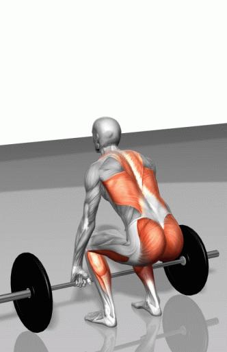

Welcome to Deadlift page,
How to Do a Conventional Deadlift: Proper Form, Variations, and Common Mistakes:
The deadlift is a hip-dominant movement that works the
back, hamstrings, core, glutes, and trapezius muscles.
deadlifts are an effective exercise to incorporate into a workout routine.
People may use them to target specific muscle groups or improve overall strength and athleticism.
An individual can perform deadlifts with various barbells, weights, and repetition ranges.
When executed with proper form, deadlifts are a safe and effective exercise for building muscle and strength.
Read on to learn about how to do a deadlift safely, the muscles it works, the correct form, and more.
Deadlift has three phases: the setup, pull, and lockout.
Here's how to do each one:
The setup:
A person should stand with their feet hip-width apart. They should focus on engaging the core muscles
and squeezing the shoulder blades together and down to engage the lats. If using a barbell, the bar should be on
the floor and touching the shins. The person should then hinge at the hips, spine extended and chest lifted.
Grip the barbell with an over-under grip, with one hand facing palm-up and the other palm-down. Squeeze the bar
and sink back into the hips.
The pull:
Push the feet into the floor, straighten the legs and lifting the chest and weight. Push the hips
forward and pull the knees backward.
The lockout:
At the top of the movement, hold the shoulders back and straighten the spine. Pause, then lower the
barbell by pushing the hips back and using the thigh and core muscles to slow the movement.

IMPORTANT note!
It is important to note that the correct form can look different for different individuals depending on
their body type and abilities. For example, if a person has very inflexible hamstrings, they may not be able
to lower as much as someone with very flexible hamstrings.
The weight and number of repetitions a person performs depend on their fitness level and goals. It is
critical not to use too much weight too soon before developing the proper lifting technique.
New lifters should focus on form first. They may want to practice the motion of deadlifting with no weight
before adding resistance.
BENEFITS OF DEADLIFT Muscle strength and size: The deadlift is an effective exerciseTrusted Source for building muscle in the upper
and lower body. As a result, it can help improve overall strength and athleticism. Increasing muscle mass can
also increase a person's metabolism.
Bone density:
The deadlift puts healthy stress on bones, which can lead to increased bone density and a reduced
risk of injury. Resistance exercises, including deadlifts, are particularly importantTrusted Source for bone
health, especially as people age.
Posture:
The deadlift helps train the back and shoulder muscles to work together. This can improve posture.
Mental health: Strength training has been shown to improve mental healthTrusted Source by reducing stress and
anxiety.
Accessibility:
Because the deadlift can be performed with various weights, it is accessible to people of all
fitness levels and ages. People do not need to visit a gym to deadlift — they can do it at home with weights,
resistance bands, or DIY weights such as water bottles.